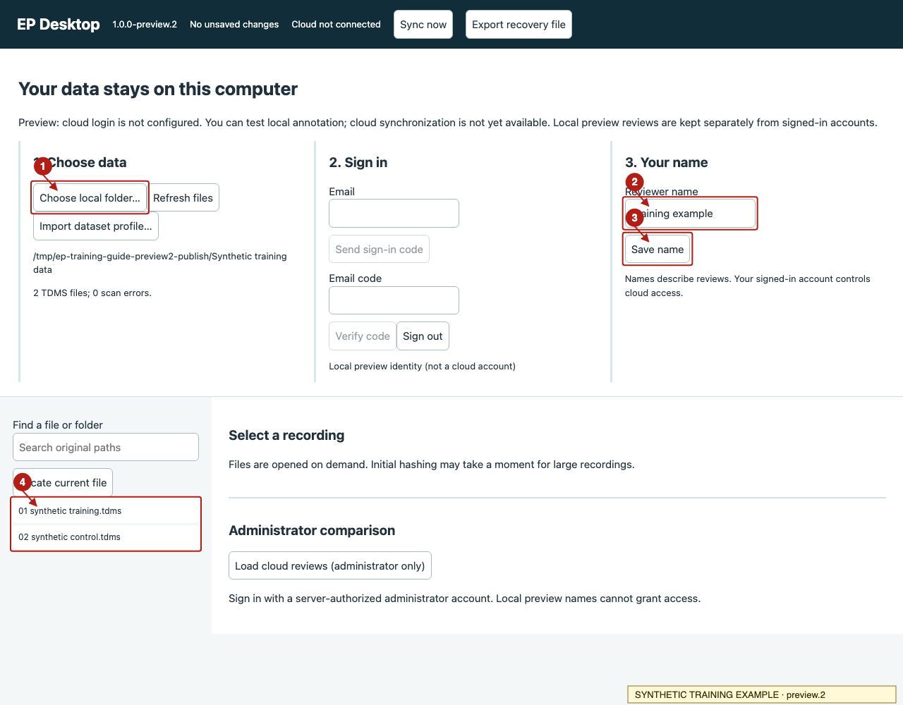
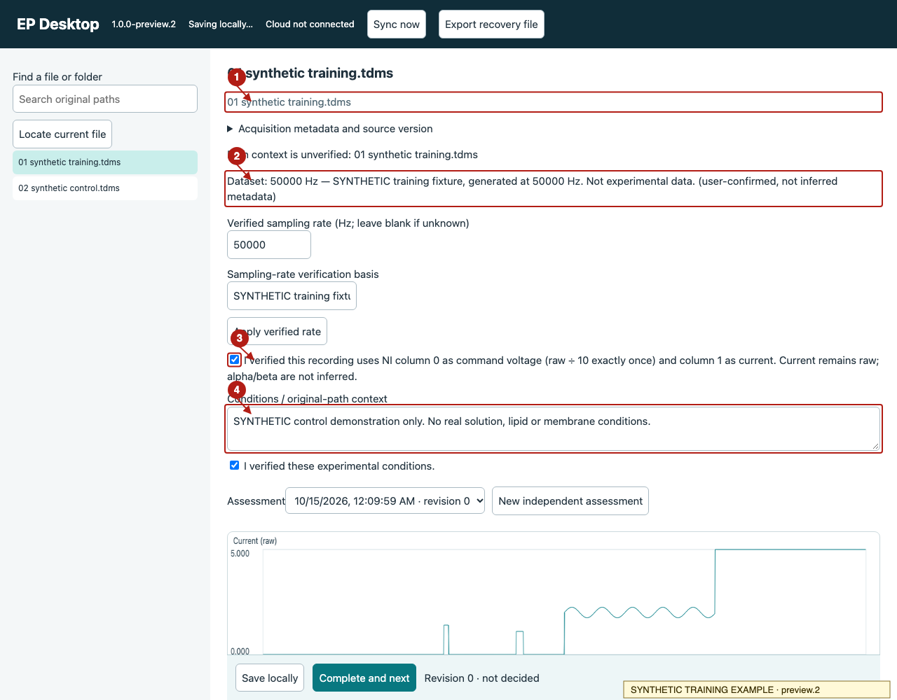
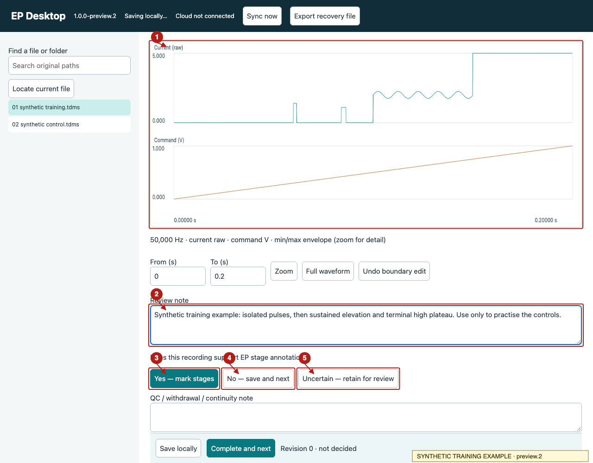
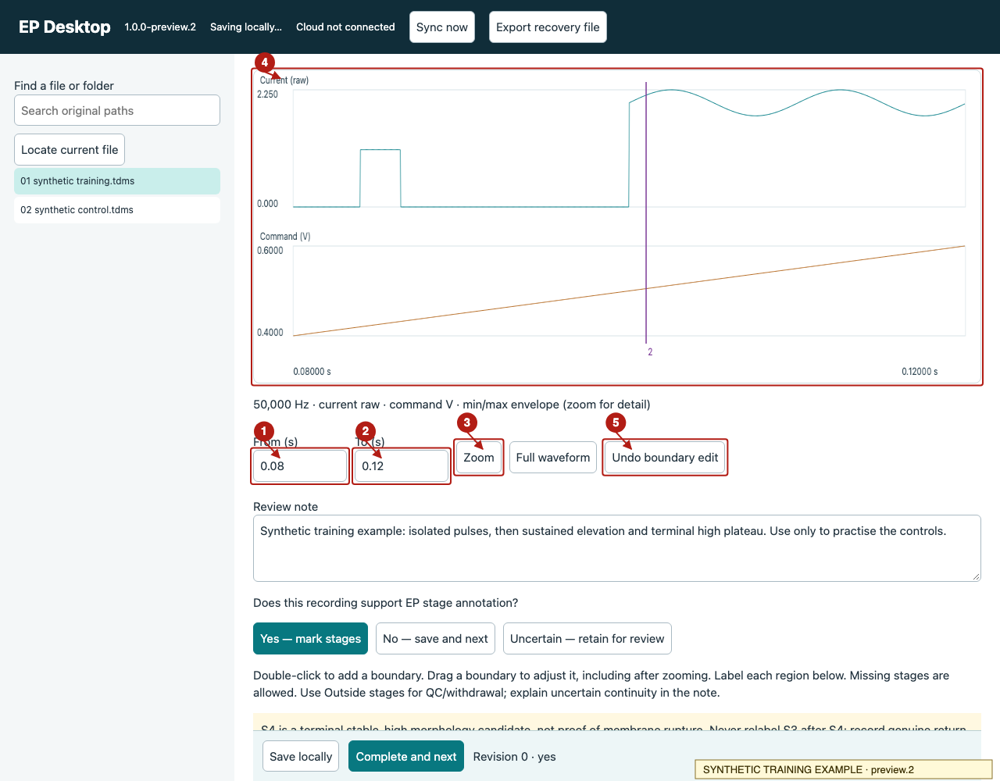
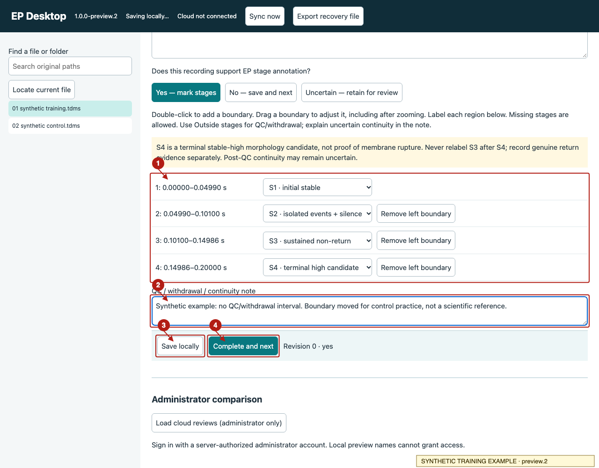
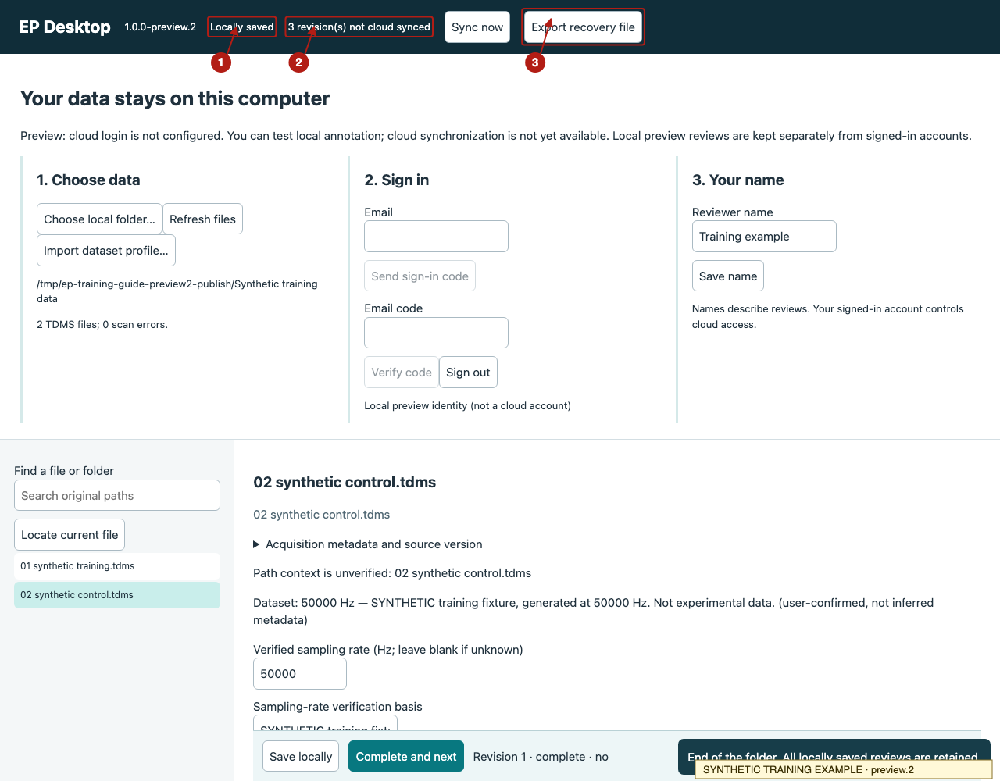
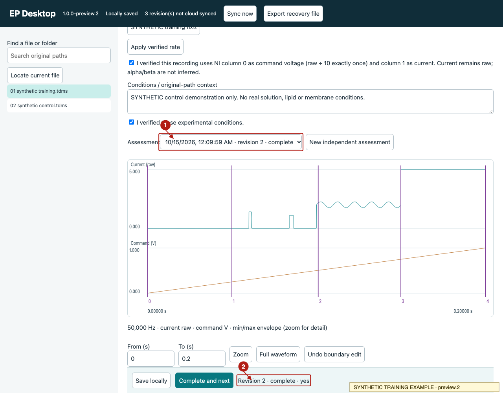

EP annotation training guide
For researchers using Windows preview.2. Work through one recording before reviewing a whole folder.
Local preview: reviews save on this computer. Login, shared reviews and cloud sync are not enabled.
1. Download the program and obtain the data
Use the Windows x64 download for 1.0.0-preview.2. The ZIP contains the program; it does not contain study recordings. Get the TDMS folder and any dataset profile separately from your coordinator.
Keep a backup of the original data. Preserve filenames and relative folders: they provide experimental context and help match reviews to recordings. You do not need Python.
2. Extract and open
- In Windows Explorer, extract the ZIP to a folder you can keep.
- Open EP Desktop.exe inside that folder. Do not run it from inside the ZIP or move the EXE away from its bundled files.
- Keep the small launcher window open. The review screen opens in your browser.
Expected: the browser displays EP Desktop and version 1.0.0-preview.2. The local program reads your TDMS files; the browser is its interface. This download page itself cannot open your data.
If Windows blocks the unsigned preview, send the message to your coordinator. Do not disable security settings. Native Windows launch and security-prompt acceptance remain manual checks.
3. Choose your folder and save your name
- Click Choose local folder… (1) and select the TDMS root folder provided for the study. The program scans subfolders.
- Enter your name (2), then click Save name (3). The training screenshot uses a fictional label.
- Wait for the scan count, then select a recording in the left file tree (4). Use Find a file or folder to search original paths.
Expected: the file opens with its path, settings and waveforms. Large files may take time to verify. Original recordings are read only. Skip the sign-in controls in this local preview.

4. Check the path, conditions and acquisition settings
Read the relative path (1) and expand Acquisition metadata and source version if needed. Enter verified solution, lipid, pipette, pH and other relevant context in Conditions / original-path context (4). Tick confirmation only when checked; a folder name is a clue, not proof.
The coordinator has confirmed 50,000 Hz for the supplied study batch. Its matching dataset profile should populate this rate (2); do not re-enter it when already applied. If it is missing, ask for the profile or import the supplied profile with Import dataset profile…. A different or conflicting file needs verification; do not assume every new file is 50 kHz. Unknown rates may display sample indices instead of seconds.
Tick the acquisition checkbox (3) only after verifying its channel mapping. For the confirmed setup, command voltage is raw ÷ 10 once. Current remains raw unless the Axopatch settings are verified: alpha = 1, beta = 1 or 0.1 as documented. Do not invent current units or interpret channel 3 without evidence.

5. Inspect the whole recording and decide whether it supports EP annotation
Start with Full waveform. Compare the current and command-voltage traces (1), protocol, metadata and file context. An IV or capacitance filename does not make a recording EP, and a filename alone should not decide exclusion.
Write the evidence in Review note (2) before choosing:
- Yes — mark stages (3): evidence supports EP stage annotation. This opens the stage editor; it does not automatically assign stages.
- No — save and next (4): evidence supports exclusion. State why first; the button saves that decision and advances.
- Uncertain — retain for review (5): evidence is insufficient or contradictory. Explain what must be checked first; this also saves and advances.
Describe suspected clipping/saturation and the affected interval; follow the study's agreed rule. Do not guess a threshold from clipped data. If you cannot decide, retain the uncertainty for discussion.

6. Zoom to inspect an event or transition
Enter a smaller interval in From (1) and To (2), then click Zoom (3). Read the displayed units: seconds when sampling is verified, otherwise samples. Full waveform restores the complete recording.
Expected: the plot shows the selected interval. The overview uses a min/max envelope; zooming reveals detail. Zoom changes the view, not the source recording or existing boundary coordinates.

7. Add and adjust boundaries
- Choose Yes — mark stages.
- Double-click the waveform at a transition to add a boundary. A vertical line and a new region row appear.
- Drag the line to refine its position. Zoom first when the transition needs closer inspection.
- Use Undo boundary edit (5 above) to undo the last edit. Use a region's Remove left boundary button to merge across an unwanted division.
Check the region time ranges after editing. The beginning and end of the recording remain fixed; internal boundaries must remain ordered. The illustrated positions demonstrate controls, not validated scientific labels.
8. Label regions and record QC or uncertainty
Choose a label for each region (1). Stages may be absent; do not force every recording into all four stages.
| Label | Study definition |
|---|---|
| S1 | Initial stable state. |
| S2 | Isolated events and the silence between them, until sustained non-return begins. |
| S3 | Sustained non-return that has not reached the terminal stable-high state. |
| S4 | Terminal stable-high morphology candidate. This alone does not confirm physical membrane rupture. |
| Outside stages / QC | QC, voltage withdrawal or intervals outside the supported stage sequence; explain in the QC note. |
Never label S3 after S4. If QC interrupts an S4 candidate, the pre-QC portion is right-censored. A clean high state after QC may be an uncertain continuation; do not silently discard it or relabel it S3. Record that uncertainty in QC / withdrawal / continuity note (2). Genuine return evidence must also be reported.

9. Save and check the status
Click Save locally to save work in progress, or Complete and next after checking the decision, labels and notes. Wait for Locally saved (1) before closing the program.
“Locally saved” does not mean uploaded. Cloud status (2) will say not connected or show revisions not synced in this preview. Sync now cannot enable an unconfigured cloud service. Administrators cannot yet retrieve these local reviews from another computer.
Click Export recovery file (3) for an additional JSON backup. Store it privately: it contains annotations and source context. Do not post it in public issues.

Windows reviews are stored in %LOCALAPPDATA%\EP Desktop\annotations.sqlite3. They are separate from the original TDMS folder. Do not delete the application-state folder when moving the program.
10. Exit and continue later
- Save and check Locally saved; make a recovery export when needed.
- Close the browser tab, then use Quit EP Desktop in the launcher.
- Reopen EP Desktop using the same OS account. Select the same recording; verify that its note, boundaries and saved assessment return.
The Assessment menu (1) selects a saved assessment. New independent assessment starts another review while retaining the earlier one. Do not use it merely to continue unfinished work. The completed revision/decision appears beside the save controls (2).

11. If something does not work
- No files, or scan errors
- Check the selected root folder and the scan message. Use Refresh files after correcting the location. Keep the originals unchanged.
- File cannot open, source changed, or sampling conflicts
- Record the exact message and file context. Ask the coordinator to verify the source/profile. Do not guess settings or rename files to make an error disappear.
- Save fails or recovered draft conflicts
- Keep the app open, export recovery and report the message. Do not overwrite a newer review or assume an error means the save succeeded.
- Browser loses its connection
- Check whether the launcher is still running. Reopen its annotation window, then check the saved assessment before continuing.
- Stage order is rejected
- Review the boundaries and labels. Do not force an earlier stage after a later one; describe returns, QC and uncertain continuity in the notes.
For help, send the error message and a privacy-safe screenshot to your coordinator. Avoid sharing real waveforms, identifying paths or review exports publicly.